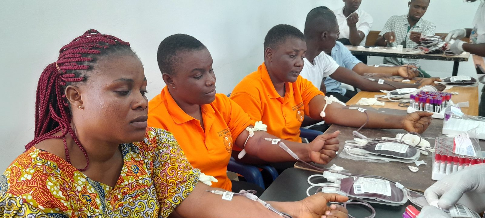
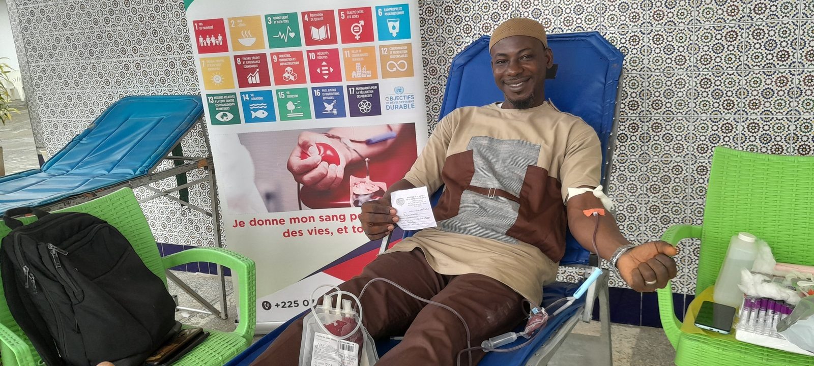
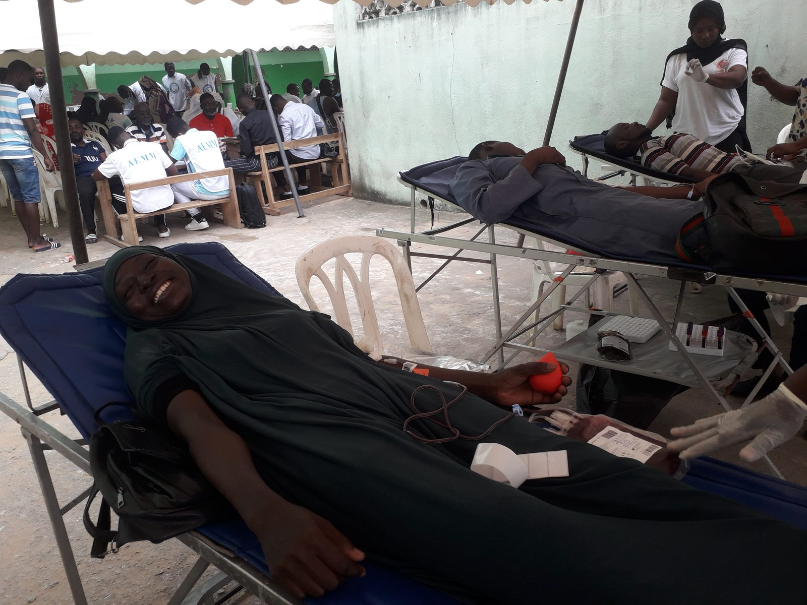

Nos activités
Depuis 2021, ONG EDUCATION ODD a réalisé plus de 60 campagnes de sensibilisation suivies de 60 collectes de poches de sang…
Nos 3 activités principales
Promotion des 17 ODD
- Samedi 25 juillet 2021 – à l'UFR des sciences pharmaceutiques et biologiques en collaboration avec la 35e promotion des étudiants de l'UFR des sciences pharmaceutiques et biologiques d'Abidjan.
- Samedi 24 septembre 2022 – célébration de la Journée mondiale des pharmaciens en collaboration avec l'Ordre National des Pharmaciens de Côte d'Ivoire et la société SOCAPHARM.
- Lundi 21 août 2023 – , à l’occasion des 18e assises scientifiques et culturelles de la FESPAO (Fédération des Etudiants en Sciences Pharmaceutiques de l’Afrique de l’Ouest). à l'UFR des sciences pharmaceutiques et biologiques.
- Mercredi 11 octobre 2023 – , à l’INSTITUT NATIONAL DE FORMATION DES AGENTS DE SANTE D’ABIDJAN (INFAS).
- Samedi 20 avril 2024 – , à l’occasion de la célébration de la journée mondiale de la santé, à l’UFR des Sciences Médicales de l’Université Felix Houphouët boigny
- Mercredi 21 août 2024 – , à la RTI COCODY (Radio, Télévision, Ivoirienne), en collaboration avec la Direction de la Promotion et de l’éducation au Développement Durable du Ministère de l’Environnement, du Développement Durable et de la transition écologique, le Centre National de Transfusion Sanguine de Côte d’Ivoire (CNTS-CI) en plus du Département Social et médical de la RTI.
- Mercredi 18 septembre 2024 – , à DPCI (grossiste répartiteur de médicaments), dans le cadre de la célébration de la journée mondiale des Pharmaciens en collaboration avec l'ordre national des pharmaciens de Côte d'Ivoire et la société SOCAPHARM.
- Samedi 30 août 2025 – , à l’Institut national de formation des agents de santé (INFAS) d’ABIDJAN, en collaboration avec l’Association des Agents Santé Bénévoles de l’infas et le Centre National de Transfusion Sanguine de Côte d’Ivoire (CNTS-CI).
- etc.


ODD 3 : Santé et bien-être
- Vendredi 27 août 2021 – à l'UFR des Sciences médicales en collaboration avec l'Association des étudiants en médecine.
- Samedi 30 juillet 2022 – à la mosquée DIARRASSOUA de YOPOUGON ATTIE en collaboration avec L’AMICALE DES ETUDIANTS MUSULMANS DE L’UFR DES SCIENCES MEDICALES D’ABIDJAN (AEMM).
- Dimanche 07 mai 2023 – à l’EGLISE SAINT JACQUES DE COCODY LES DEUX PLATEAUX, en collaboration avec la CARITAS SAINT JACQUES et l’OPPJ de la paroisse SAINT JACQUES.
- Samedi 24 juin 2023 – à la GRANDE MOSQUEE D’AGHIEN, en collaboration avec le conseil de gestion de la mosquée.
- Samedi 28 septembre 2024 – à l’UFR des sciences pharmaceutiques et biologiques d'Abidjan en collaboration avec l'Ordre National des Pharmaciens de Côte d'Ivoire et la société socapharm, dans le cadre de la célébration de la journée mondiale des Pharmaciens.
- Lundi 14 avril 2025 – à l’École Nationale d'Administration de Côte d'Ivoire (ENA), en collaboration avec la 59e promotion des élèves de l’ENA.
- Dimanche 07 septembre 2025 – à la paroisse Sainte Famille de la Riviera en collaboration avec le Mouvement Ivoirien des Dirigeants d'Entreprise et Cadres Chrétiens (MIDEC).
- Samedi 30 août 2025 – à l’école de base de l’Institut national de formation des agents de santé (INFAS) d’ABIDJAN, en collaboration avec l’Association des Agents de Santé Bénévoles de l’INFAS.
- etc.






ODD 4 : Éducation de qualité
Promotion de l’éducation de qualité en encourageant l’excellence dans les établissements scolaires et estudiantins par la mise en œuvre d’un programme d’éveil scientifique et entrepreneurial :
- Le mercredi 23 février 2022 – à travers l’initiation à l’observation dans un microscope, à l’école primaire publique château d’eau de Cocody.
- Le mercredi 13 avril 2022 – à travers l’initiation à la fabrication de savon, à l’école primaire publique château d’eau de Cocody.